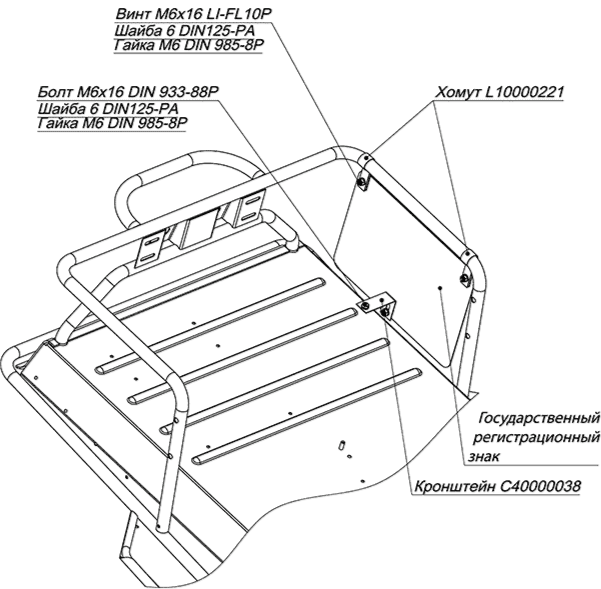
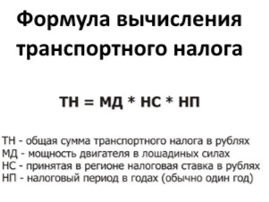

+7 (4855) 320-300
+7 (4855) 320-300 info@go-rm.ru
info@go-rm.ru КОМПАНИЯ
КОМПАНИЯ ИНФОРМАЦИЯ
ИНФОРМАЦИЯ ГАРАНТИЯ И
СЕРВИС
ГАРАНТИЯ И
СЕРВИС ПОКУПАТЕЛЯМ
ПОКУПАТЕЛЯМ КОНТАКТЫ
КОНТАКТЫПравовая информация
Нужны ли права на снегоход или мотовезеход?
Да, права необходимы. Ведь это средство передвижения, для грамотного и правильного управления которым следует обладать специфическими навыками. Права — свидетельства наличия знаний о правилах дорожного движения.
Не нужны права для управления снегоходом «Тайга РМ Рысь 50» и мотовездеходом «РЫСЬ 50»
Условия получения прав:
- Использовать снегоход или мотовездеход имеют права только лица, достигшие возраста 16 лет.
- Прохождение медицинской комиссии является обязательным условием для получения удостоверения
тракториста-машиниста . - Скачать «Перечень билетов для сдачи этапа экзамена по безопасной эксплуатации самоходных машин».
Как получить права на снегоход и мотовездеход?
Во-первых, необходимо оформить УТМ (удостоверение тракториста-машиниста). Оно подтверждает легитимность права на управление машинами самоходных типов. В УТМ обязательно должна быть категория «А», с 2013 года «А1». Для управления РМ 800 UTV — УТМ категория «А», с 2013 года «А2».
Во-вторых, если вы планируете управлять квадроциклом, необходима регистрация в ГИБДД, если «снегоболотоходом» и «мотовездеходом» — в Гостехнадзоре.
Для регистрации техники АО «Русская механика» вам необходимо обратится в территориальный отдел Гостехнадзора (обращайтесь в тот, к которому вы причислены по адресу прописки или постоянного места жительства).
В случае, если вы уже обладаете водительскими правами с открытой категорией А, то получение прав на управление снегоходом и мотовездеходом будет носить лишь формальный характер. Вам нужно будет просто прийти в Гостехнадзор, прихватив с собой права и паспорт, и написать соответствующее заявление.
Остальным придется пройти обучение.
Срок действия прав и замена прав на снегоход (мотовездеход)
Срок действия прав 10 лет.
Замена производится без последующей пересдачи экзаменов, всего лишь при предъявлении медсправки. Исключение составляют случаи, если разрешение приобреталось в других государствах: придётся сдавать экзамен.
В случае утраты прав выдача производится с предъявлением документов, указанных ниже.
Перечень документов для получения прав на снегоход и мотовездеход
- Заявление.
- Паспорт
- Квитанция, подтверждающая произведение оплаты госпошлины.
- Медицинская справка (в ней в обязательном порядке должно быть прописано, что человек годен к управлению именно самоходными транспортными средствами, а не стандартными автомобилями соответствующей группы)/
- Водительское удостоверение (при наличии).
- Две фотографии в размере 3×4 с левым уголком.
- Справка из Гостехнадзора о том, что ранее такое удостоверение вам не выдавалось, и/или вы его не лишались.
Прохождение экзамена
Экзамен состоит из двух составляющих. Сначала сдается теория, затем проходит практика.
Теория включает в себя прохождение двух тестов: на ПДД и на технику безопасности при обращении со снегоходом или мотовездеходом. Практическая часть включает выполнение ряда упражнений: «змейка», «гараж» и другие. Если вы уже обладаете правами
Те, кто не смог сдать теорию, к практике не допускаются, но они могут «испытать счастье» повторно через 7 дней. Положительная оценка за сдачу теории действует 3 месяца. После трех раз подряд неудачных испытаний необходимо пройти дополнительное обучение вождению с представлением документа.
Как проходит регистрация и постановка на учет снегохода или мотовездехода
Необходимо обратиться в территориальный отдел Гостехнадзора (обращайтесь в тот, к которому вы причислены по адресу прописки или постоянного места жительства) и сдать документы на технику.
Список документов на технику:
- ПСМ (паспорт самоходной машины) вашего снегохода или мотовездехода;
- договор
купли-продажи с актомприема-передачи , в подтверждение законности владения; - сертификат соответствия на технику.
Весь комплект документов на технику выдают в официальных дилерских центрах РМ при покупке техники;
Список документов:
- Заявление.
- Паспорт
- Квитанция, подтверждающая произведение оплаты госпошлины.
- Права категории «А1» (УТМ)
Срок подачи заявления на регистрацию (постановку на учет) техники не должен превышать десять дней с момента приобретения, потом возможен штраф.
Крепление государственного регистрационного знака на снегоход
Государственный регистрационный знак необходимо крепить сбоку на левой стороне снегохода в его задней части параллельно продольной плоскости симметрии. Детали крепления номерного знака поставляются в комплекте со снегоходом.
Верхнюю часть знака крепить к трубе багажника с помощью хомутов, нижнюю часть знака крепить с помощью кронштейна через отверстие в корпусе рамы крепежными деталями из комплекта крепления номерного знака.

Крепление государственного регистрационного знака на снегоход
Страховка на снегоход или мотовездеход
Страховать технику не обязательно, это дело добровольное.
Нужно ли платить транспортный налог на снегоход или мотовездеход
Да, нужно.
Транспортный налог на снегоход или мотовездеход является обязательной государственной госпошлиной.
Размер платы зависит от мощности двигателя.
После регистрации техники в Гостехнадзоре, информация поступает в налоговую службу домашнего региона. Налог будет начисляться с момента постановки техники на учёт, и спустя год, приходит в конверте по адресу прописки.
Величина данного налога в каждом регионе разная.
Оплата производится по аналогии с автомобилем. Денежные средства должны опуститься в казну не позже 1 июля текущего года за прошлый год (физическим лицам). Квитанция, как правило, приходит по почте в районе апреля. Организациям раньше — до 5 февраля.
Какой размер транспортного налога. Расчетная формула

Расчёт производится из следующих соображений: установленный тариф выбранного региона умножается на количество лошадок. Отсюда имеем формулу:
ТАРИФ х МОЩНОСТЬ (в лошадиных силах) = сумма.
К примеру, возьмём Москву: мотовездеход до 50 л.с. по 25 рублей, свыше 50 л.с. — 50 рублей за 1 лошадиную силу в год.